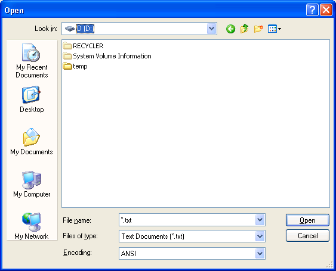
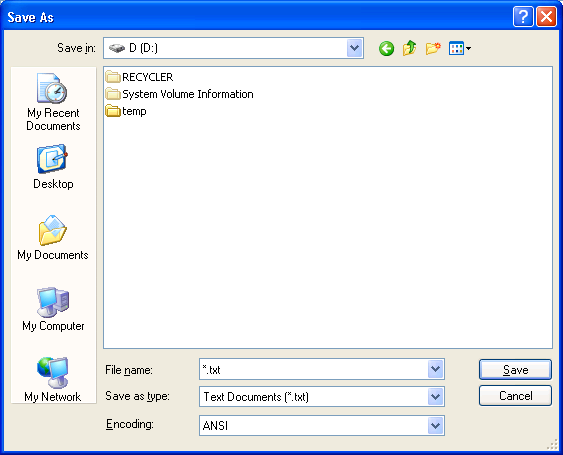

[!NOTE] The GetOpenFileName function is demonstrated in the File is in use sample.
[Starting with Windows Vista, the Open and Save As common dialog boxes have been superseded by the Common Item Dialog. We recommended that you use the Common Item Dialog API instead of these dialog boxes from the Common Dialog Box Library.]
The Open dialog box lets the user specify the drive, directory, and the name of a file or set of files to open. You create and display an Open dialog box by initializing an OPENFILENAME structure and passing the structure to the GetOpenFileName function.
The Save As dialog box lets the user specify the drive, directory, and name of a file to save. You create and display a Save As dialog box by initializing an OPENFILENAME structure and passing the structure to the GetSaveFileName function.
Explorer-style Open and Save As dialog boxes provide user-interface features that are similar to the Windows Explorer. However, the system continues to support old-style Open and Save As dialog boxes for applications that must be consistent with the old-style user interface.
In addition to the difference in appearance, the Explorer-style and old-style dialog boxes differ in their use of custom templates and hook procedures for customizing the dialog boxes. However, the Explorer-style and old-style dialog boxes have the same behavior for most basic operations, such as specifying a file name filter, validating the user's input, and getting the file name specified by the user. For more information about the Explorer-style and old-style dialog boxes, see Open and Save As Dialog Box Customization.
The following illustration shows a typical Explorer-style Open dialog box.

The following illustration shows a typical Explorer-style Save As dialog box.

If the user specifies a file name and clicks the OK button, GetOpenFileName or GetSaveFileName returns TRUE. The buffer pointed to by the lpstrFile member of the OPENFILENAME structure contains the full path and file name specified by the user.
If the user cancels the Open or Save As dialog box or an error occurs, the function returns FALSE. To determine the cause of the error, call the CommDlgExtendedError function to retrieve the extended error value. If the lpstrFile buffer is too small to receive the full name, CommDlgExtendedError returns FNERR_BUFFERTOOSMALL and the first 2 bytes of the buffer pointed to by the lpstrFile member are set to an integer value specifying the size required to receive the full name.
The following topics are discussed in this section.
The information in this section applies to both Explorer-style and old-style Open and Save As dialog boxes.
Before calling the GetOpenFileName or GetSaveFileName functions, the lpstrFile member of the OPENFILENAME structure must point to the buffer to receive the file name. The nMaxFile member must specify the size, in characters, of the lpstrFile buffer. For an ANSI function this is the number of bytes, but for a Unicode function this is the number of characters.
If the user specifies a file name and clicks the OK button, the dialog box copies the selected drive, directory, and file name to the lpstrFile buffer. The function also sets the nFileOffset and nFileExtension members to the offsets, in characters, from the start of the buffer to the file name and to the file name extension, respectively.
To retrieve just the file name and extension, set the lpstrFileTitle member to point to a buffer and set the nMaxFileTitle member to the size, in characters, of the buffer. Alternatively, you can pass the lpstrFile buffer in a call to the GetFileTitle function to get the display name of the selected file. Note, however, that the file name that GetFileTitle returns includes an extension only if that is the user's preference for displaying file names.
The dialog box uses the current directory for the calling process as the initial directory from which to display files and directories. Use the GetCurrentDirectory and SetCurrentDirectory functions to get and change the current directory of a process. To specify a different initial directory without changing your current directory, use the lpstrInitialDir member to specify the name of a directory. The dialog box automatically changes your current directory when the user selects a different drive or directory. To prevent the dialog box from changing your current directory, set the OFN_NOCHANGEDIR flag. This flag does not prevent the user from changing directories to find a file.
To specify a default file name extension, use the lpstrDefExt member. If the user specifies a file name that does not have an extension, the dialog box adds your default extension. If you specify a default extension and the user specifies a file name with a different extension, the dialog box sets the OFN_EXTENSIONDIFFERENT flag.
To let the user select more than one file from a directory, set the OFN_ALLOWMULTISELECT flag. For compatibility with older applications, the default multiple selection dialog box uses the old-style user interface. To display an Explorer-style multiple selection dialog box, you must also set the OFN_EXPLORER flag.
If the user selects more than one file, the buffer pointed to by the lpstrFile member returns the path to the current directory followed by the file names of the selected files. The nFileOffset member is the offset to the first file name, and the nFileExtension member is not used. The following table describes the difference between Explorer-style and old-style dialog boxes in returning multiple file names.
| Dialog box style | Description |
|---|---|
| Explorer-style dialog boxes | The directory and file name strings are NULL separated, with an extra NULL character after the last file name. This format enables the Explorer-style dialog boxes to return long file names that include spaces. |
| Old-style dialog boxes | The directory and file name strings are separated by spaces. For file names with spaces, the function uses short file names. |
Â
You can use the FindFirstFile function to convert between long and short file names.
If you specify OFN_ALLOWMULTISELECT and the user selects only one file, the lpstrFile string does not have a separator between the path and file name.
The information in this section applies to both Explorer-style and old style Open and Save As dialog boxes.
You can provide file name filters to assist the user in limiting the file names that the dialog box displays. A file name filter consists of a pair of null-terminated strings, a description and a pattern, one concatenated to the other. The dialog box displays the description to let the user pick which filter to use; and it uses the pattern to select the files to display.
To specify the filters, set the lpstrFilter member of the OPENFILENAME structure to point to a buffer that contains an array of filter string pairs. The last string in the array must be followed by an extra null character.
A pattern string can be a combination of valid file name characters and the asterisk (*). The asterisk is a wildcard that represents any combination of valid file name characters. The dialog box displays only those files that match the pattern. To specify multiple patterns for the same description, you must use a semicolon (;) to separate the patterns. Note that space characters in the pattern string can produce unexpected results.
The following code fragment specifies two filters. The filter with the "Source" description has two patterns. If the user selects this filter, the dialog box displays only files that have the .C and .CXX extensions. Note, in the C programming language, a string enclosed in double quotes is null-terminated.
OPENFILENAME ofn; // common dialog box structure
ofn.lpstrFilter = "Source\0*.C;*.CXX\0All\0*.*\0"
ofn.nFilterIndex = 1;
The nFilterIndex member of the OPENFILENAME structure specifies an index that indicates which filter the dialog box initially uses. The first filter in the buffer has index 1, the second 2, and so on. If the user changes the filter while using the dialog box, the nFilterIndex member is set to the index of the selected filter on return.
You can create a custom filter by setting the lpstrCustomFilter member to the address of a buffer that contains a single filter, and by setting the nMaxCustFilter member to the size of the buffer, in characters or bytes. The dialog box always places the custom filter at the beginning of the list of filters and, on return, always updates the pattern part of the filter with the pattern from the filter selected by the user.
For Explorer-style dialog boxes, the default extension may change if the user selects a different filter. If the user selects a filter whose first pattern is of the form *.xxx (that is, the extension does not include a wildcard character), the dialog box uses xxx as the default extension. This occurs only if you specified a default extension in the lpstrDefExt member of the OPENFILENAME structure. For example, if the user selects the "Source\0*.C;*.CXX\0" filter, the default extension changes to "C". However, if you had defined the filter as "Source\0*.C*\0", the default extension would not change because the extension includes a wildcard.
The CDN_INCLUDEITEM notification message provides another way to filter the names that the dialog box displays. To use this message, provide an OFNHookProc hook procedure and specify the OFN_ENABLEINCLUDENOTIFY flag in the OPENFILENAME structure when you create the dialog box. Each time the user opens a folder, the dialog box sends a CDN_INCLUDEITEM notification to your hook procedure for each item in the newly opened folder. The return value of the hook procedure indicates whether the dialog box should display the item in the folder's item list.
Except as noted, the information in this section applies to both Explorer-style and old-style Open and Save As dialog boxes.
The dialog box automatically validates file names typed by the user to ensure that the names contain only valid characters. To override the file name character validation, set the OFN_NOVALIDATE flag.
To force the dialog box to verify that the user specified the name of an existing file, set the OFN_FILEMUSTEXIST flag. To force verification that the specified path exists, set the OFN_PATHMUSTEXIST flag. If you set the OFN_CREATEPROMPT flag, the dialog box prompts the user for permission to create a nonexistent file. If this flag is set and the user chooses to create a new file, the dialog box closes, and the function returns the specified name. Otherwise, the dialog box remains open.
When using the Save As dialog box, you can direct the dialog box to prompt the user for permission to overwrite an existing file by setting the OFN_OVERWRITEPROMPT flag.
By default, the dialog box creates a zero-length test file to determine whether a new file can be created in the selected directory. To prevent the creation of this test file, set the OFN_NOTESTFILECREATE flag.
If you enable a hook procedure, the dialog box notifies your hook procedure when a network sharing violation occurs for the file name specified by the user. If you set the OFN_EXPLORER flag, the dialog box sends the CDN_SHAREVIOLATION message to the hook procedure. If you do not set OFN_EXPLORER, the dialog box sends the SHAREVISTRING registered message to the hook procedure. To prevent the dialog box from sending any notifications for sharing violations, set the OFN_SHAREAWARE flag.
If the user selects the read-only check box, the dialog box sets the OFN_READONLY flag on return. To hide the Open As Read Only check box, set the OFN_HIDEREADONLY flag. To prevent the dialog box from returning names of existing files that have the read-only attribute, set the OFN_NOREADONLYRETURN flag.
To prevent the dialog box from dereferencing link files, set the OFN_NODEREFERENCELINKS value. In this case, the dialog box returns the name of the link file rather than the name of the file referenced by the link file.
You can customize an Open or Save As dialog box by providing a hook procedure, a custom template, or both. However, the Explorer-style and old-style versions of the dialog boxes differ in their use of custom templates and hook procedures.
For information about customizing an Explorer-style dialog box, see Explorer-Style Hook Procedures, Explorer-Style Custom Templates, and Explorer-Style Control Identifiers. For information about customizing an old-style dialog box, see Customizing Old-Style Dialog Boxes.
The following table summarizes the differences between the two styles.
| Customization | Description |
|---|---|
| Explorer-style Hook procedure | The hook procedure receives notification messages sent from the common dialog box and messages for any additional controls that you defined by specifying a child dialog template. The hook procedure does not receive messages for the standard controls of the default dialog box. |
| Explorer-style Custom template | The system uses the custom template to create a child dialog box. The template can define additional controls, and can specify the location of the cluster of standard controls. The custom template does not replace the default template. |
| Old-style Hook procedure | The hook procedure receives all messages sent to the dialog box, including messages for the standard controls and any custom controls. The hook procedure also receives registered messages sent from the common dialog box. |
| Old-style Custom template | The custom template replaces the default template. Create the custom template by modifying the default template specified in the Fileopen.dlg file. |
Â
The default title for both Explorer-style and old-style dialog boxes is either "Open" or "Save As." To change the title, specify the new title in the lpstrTitle member of the OPENFILENAME structure.
A user's HKEY_CURRENT_USER registry hive can contain values that customize the contents of the Explorer-style Open and Save As dialog boxes. These registry entries affect only the dialog boxes displayed for the user associated with the registry hive.
To hide features of Explorer-style Open and Save As dialog boxes, an administrator can set the values in the following table under this subkey:
HKEY_CURRENT_USER
   Software
      Microsoft
         Windows
            CurrentVersion
               Policies
                  Comdlg32
| Value name | Value | Meaning |
|---|---|---|
| NoPlacesBar | 1 | Hides the places bar. |
| NoFileMRU | 1 | Hides the Most Recently Used (MRU) list. |
| NoBackButton | 1 | Hides the Back button. |
Â
The contents of the Places bar are determined by the contents of the following subkey:
HKEY_CURRENT_USER
   Software
      Microsoft
         Windows
            CurrentVersion
               Policies
                  Comdlg32
                     Placesbar
Currently, there can only be five entries under this key, and the value/name index is zero-based. The names for the entries should be Place0, Place1, Place2,Place3, and Place4. The values of the entries can be REG_DWORD, REG_SZ, or REG_EXPAND_SZ values that identify locations to include in the places bar.
| Value type | Meaning |
|---|---|
| REG_DWORD | A CSIDL value that identifies a folder. For a list of CSIDL values, see CSIDL values. |
| REG_SZ or REG_EXPAND_SZ | A null-terminated string that specifies a valid path. |
Â
You can customize an Explorer-style Open or Save As dialog box by providing a hook procedure, a custom template, or both. If you provide a hook procedure for an Explorer-style dialog box, the system creates a dialog box that is a child of the default dialog box. The hook procedure acts as the dialog procedure for the child dialog box. This child dialog box is based on the custom template, or on a default template if none is provided. For more information, see Explorer-Style Custom Templates.
To enable a hook procedure for an Explorer-style Open or Save As dialog box, use the OPENFILENAME structure when you create the dialog box. Set the OFN_ENABLEHOOK and OFN_EXPLORER flags in the Flags member and specify the address of an OFNHookProc hook procedure in the lpfnHook member. If you provide a hook procedure and omit the OFN_EXPLORER flag, you must use an OFNHookProcOldStyle hook procedure and you will get the old-style user-interface. For more information, see Customizing Old-Style Dialog Boxes.
An Explorer-style hook procedure receives a variety of messages while the dialog box is open. These include the following:
In addition, there is a set of messages that you can send to an Explorer-style dialog box to get information or to control the behavior and appearance of the dialog box.
If you provide a hook procedure for an Explorer-style dialog box, the default dialog box procedure creates a child dialog box when the default dialog procedure is processing its WM_INITDIALOG message. The hook procedure acts as the dialog procedure for the child dialog box. At this time, the hook procedure receives its own WM_INITDIALOG message with the lParam parameter set to the address of the OPENFILENAME structure used to initialize the dialog box. After the child dialog finishes processing its own WM_INITDIALOG message, the default dialog procedure moves the standard controls, if necessary, to make room for any additional controls of the child dialog box. The default dialog procedure then sends the CDN_INITDONE notification message to the hook procedure.
The hook procedure receives WM_NOTIFY notification messages indicating actions taken by the user in the dialog box. You can use some of these messages to control the behavior of the dialog box. For example, the hook procedure receives the CDN_FILEOK message when the user chooses a file name and clicks the OK button. In response to this message, the hook procedure can use the SetWindowLong function to reject the selected name and force the dialog box to remain open.
The lParam parameter for each WM_NOTIFY message is a pointer to an OFNOTIFY or OFNOTIFYEX structure that defines the action. The code member in the header of this structure contains one of the following notification messages.
| Message | Meaning |
|---|---|
| CDN_FILEOK | The user clicked the OK button; the dialog box is about to close. |
| CDN_FOLDERCHANGE | The user opened a new folder or directory. |
| CDN_HELP | The user clicked the Help button. |
| CDN_INCLUDEITEM | Determines whether an item should be displayed. When the user opens a new folder or directory, the system sends this notification for each item in the folder or directory. The system sends this notification only if the OFN_ENABLEINCLUDENOTIFY flag was set. |
| CDN_INITDONE | The system has finished initializing the dialog box, and the dialog box has finished processing the WM_INITDIALOG message. Also, the system has finished arranging controls in the common dialog box to make room for the controls of the child dialog box (if any). |
| CDN_SELCHANGE | The user selected a new file or folder from the file list. |
| CDN_SHAREVIOLATION | The common dialog box encountered a sharing violation on the file about to be returned. |
| CDN_TYPECHANGE | The user selected a new file type from the list of file types. |
Â
These WM_NOTIFY messages supersede the FILEOKSTRING, LBSELCHSTRING, SHAREVISTRING, and HELPMSGSTRING registered messages used by previous versions of the Open and Save As dialog boxes. However, the hook procedure also receives the superseded message after the WM_NOTIFY message if the WM_NOTIFY processing does not use SetWindowLong to set a nonzero DWL_MSGRESULT value.
To retrieve information about the status of the dialog box or to control the behavior and appearance of the dialog box, the hook procedure can send the following messages to the dialog box.
| Message | Meaning |
|---|---|
| CDM_GETFILEPATH | Retrieves the path and file name of the selected file. |
| CDM_GETFOLDERIDLIST | Retrieves the item identifier list corresponding to the current folder that the dialog box has open. For more information about item identifier lists, see Introduction to the Shell Namespace. |
| CDM_GETFOLDERPATH | Retrieves the path of the current folder or directory for the dialog box. |
| CDM_GETSPEC | Retrieves the file name (not including the path) of the file currently selected in the dialog box. |
| CDM_HIDECONTROL | Hides the specified control. |
| CDM_SETCONTROLTEXT | Sets the text in the specified control. |
| CDM_SETDEFEXT | Sets the default file name extension for the dialog box. |
Â
To define additional controls for an Explorer-style Open or Save As dialog box, use the OPENFILENAME structure to specify a template for a child dialog box that contains the additional controls. If your child dialog template is a resource in an application or dynamic-link library, set the OFN_ENABLETEMPLATE flag in the Flags member and use the hInstance and lpTemplateName members of the structure to identify the module and resource name. If the template is already in memory, set the OFN_ENABLETEMPLATEHANDLE flag and use the hInstance member to identify the memory object that contains the template. When providing a child dialog template for an Explorer-style dialog box, you must also set the OFN_EXPLORER flag; otherwise, the system assumes you are providing a replacement template for an old-style dialog box. Typically, if you provide additional controls, you must also provide an Explorer-style hook procedure to process messages for the new controls.
You can create your child dialog box template as you do any other template, except that you must specify the WS_CHILD and WS_CLIPSIBLINGS styles and should specify the DS_3DLOOK and DS_CONTROL styles. The system requires the WS_CHILD style because your template defines a child dialog of the default Open or Save As dialog box. The WS_CLIPSIBLINGS style ensures that the child dialog box does not paint over any of the controls in the default dialog box. The DS_3DLOOK style makes sure that the appearance of the controls in the child dialog box is consistent with the controls in the default dialog box. The DS_CONTROL style makes sure that the user can use the TAB and other navigation keys to move between all controls, default or custom, in the customized dialog box.
To make room for the new controls, the system expands the default dialog box by the width and height of the custom dialog box. By default, all controls from the custom dialog box are positioned below the controls in the default dialog box. However, you can override this default positioning by including a static text control in your custom dialog box template and assigning it the control identifier value of stc32. (This value is defined in the Dlgs.h header file.) In this case, the system uses the control as the point of reference for determining where to position the new controls. All new controls above and to the left of the stc32 control are positioned the same amount above and to the left of the controls in the default dialog box. New controls below and to the right of the stc32 control are positioned below and to the right of the default controls. In general, each new control is positioned so that it has the same position relative to the default controls as it had to the stc32 control. To make room for these new controls, the system adds space to the left, right, bottom, and top of the default dialog box as needed.
The system requires the hook procedure to process all messages intended for the custom dialog box and therefore sends the same window messages to the hook procedure as to any other dialog box procedure. For example, the hook procedure receives WM_COMMAND messages when the user clicks on button controls in the custom dialog box. The hook procedure is responsible for initializing these controls and retrieving values from the controls when the dialog box is closed. Note that when the hook procedure receives the WM_INITDIALOG message, the system has not yet moved the controls to their final positions.
The default dialog box procedure handles messages for all the controls in the default dialog box, but the hook procedure receives the notification messages for user actions on these controls as described in Explorer-Style Hook Procedures.
The Windows Software Development Kit (SDK) provides the default dialog box template for the old-style dialog boxes, but does not include the default template for the Explorer-style dialog boxes. This is because the Explorer-style dialog boxes allow you to add your own controls but do not support modifying the template for the standard controls. However, in some cases, you may need to know the control identifiers used in the default templates. For example, the CDM_HIDECONTROL and CDM_SETCONTROLTEXT messages require a control identifier.
The following table shows the identifiers of the standard controls in the Explorer-style Open and Save As dialog boxes. The identifiers are constants defined in Dlgs.h and Winuser.h.
| Control identifier | Control description |
|---|---|
| chx1 | The read-only check box |
| cmb1 | Drop-down combo box that displays the list of file type filters |
| stc2 | Label for the cmb1 combo box |
| cmb2 | Drop-down combo box that displays the current drive or folder, and that allows the user to select a drive or folder to open |
| stc4 | Label for the cmb2 combo box |
| cmb13 | Drop-down combo box that displays the name of the current file, allows the user to type the name of a file to open, and select a file that has been opened or saved recently. This is for earlier Explorer-compatible applications without hook or dialog template. Compare with edt1. |
| edt1 | Edit control that displays the name of the current file, or allows the user to type the name of the file to open. Compare with cmb13. |
| stc3 | Label for the cmb13 combo box and the edt1 edit control |
| lst1 | List box that displays the contents of the current drive or folder |
| stc1 | Label for the lst1 list box |
| IDOK | The OK command button (push button) |
| IDCANCEL | The Cancel command button (push button) |
| pshHelp | The Help command button (push button) |
Â
You can customize an old-style Open or Save As dialog box by providing an OFNHookProcOldStyle hook procedure that receives messages or notifications intended for the default dialog box procedure. You can also provide a custom template to use in place of the default template. The hook procedures and templates used with the old-style dialog boxes are similar to those used with the other common dialog boxes. For more information, see Hook Procedures for Common Dialog Boxes and Custom Templates.
To enable a hook procedure for an old-style Open or Save As dialog box, use the OPENFILENAME structure when you create the dialog box. Set the OFN_ENABLEHOOK flag in the Flags member and specify the address of an OFNHookProcOldStyle hook procedure in the lpfnHook member. The dialog box procedure sends a WM_INITDIALOG message to the hook procedure with the Param parameter set to the address of the OPENFILENAME structure used to initialize the dialog box.
You can use the OPENFILENAME structure to specify a custom template for the Open or Save As dialog box to use in place of the default template. If your custom template is a resource in an application or dynamic-link library, set the OFN_ENABLETEMPLATE flag in the Flags member and use the hInstance and lpTemplateName members of the structure to identify the module and resource name. If your custom template is already in memory, set the OFN_ENABLETEMPLATEHANDLE flag and use the hInstance member to identify the memory object that contains the template. Create the custom template by modifying the default template specified in the Fileopen.dlg file. The control identifiers used in the default Find and Replace dialog templates are defined in the Dlgs.h file.
By default, the GetOpenFileName and GetSaveFileName functions display the Explorer-style dialog boxes. If you want to display an old-style dialog box, you must provide an OFNHookProcOldStyle hook procedure and ensure that the OFN_EXPLORER flag is not set in the Flags member of the OPENFILENAME structure.
If you set the OFN_EXPLORER flag, the system treats a hook procedure or custom template as an Explorer-style customization. For information about customizing an Explorer-style dialog box, see Explorer-Style Custom Templates.